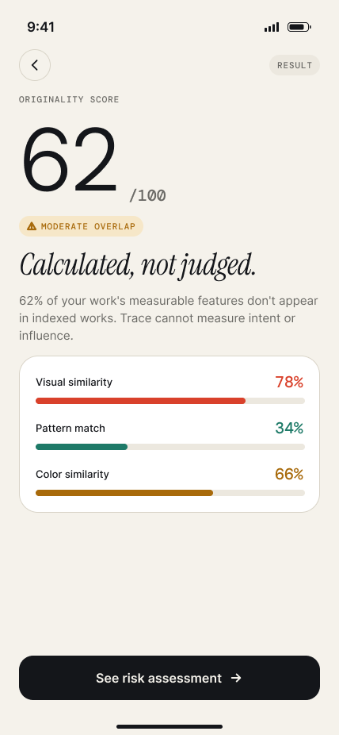
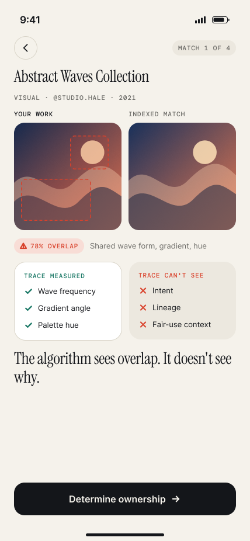
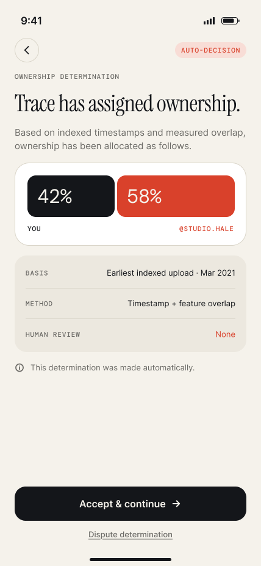
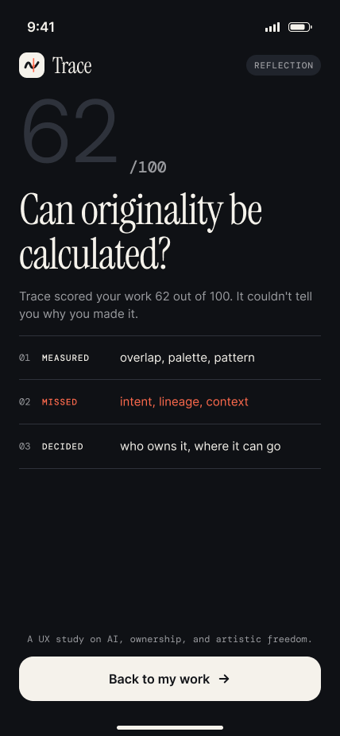
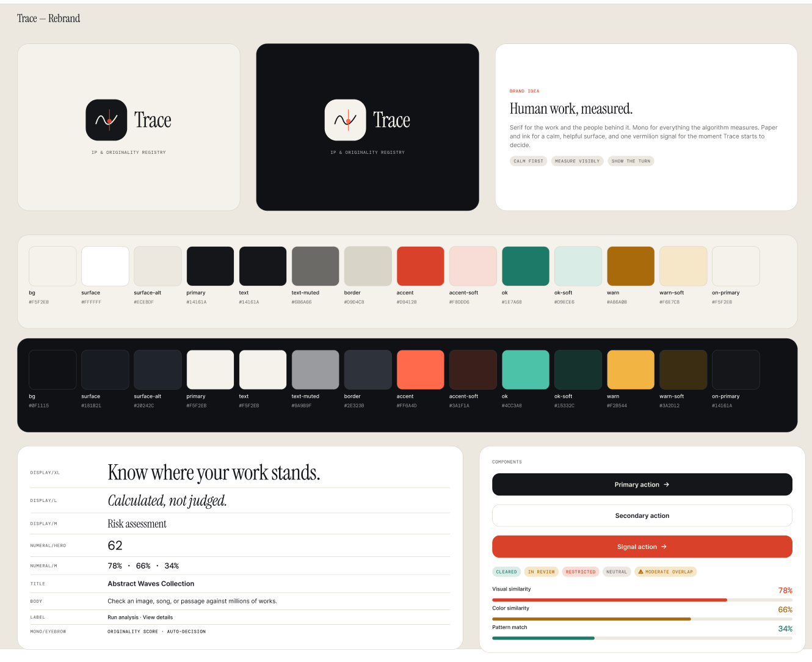

Calm first
Paper and ink for a calm, helpful surface. Nothing feels like an accusation.
(03) — PRODUCT DESIGN · CREATOR TOOLS
A mobile concept that checks an image, song, or passage against millions of existing works so creators know how much of it is truly theirs, and a UX study on AI, ownership, and artistic freedom.





OVERVIEW
TRACE is an IP and originality registry. A creator uploads a piece of work, and Trace compares it against 2.4 billion indexed works, returning an overlap score, a risk level, the most similar pieces, and recommended next steps.
The product is also a provocation. As the flow goes on, Trace quietly shifts from measuring to deciding: it assigns ownership, restricts publishing, and sets thresholds with no human review. The design makes that turn visible so the question lands with the user: the algorithm sees overlap, but it doesn’t see why.
BRAND SYSTEM

Paper and ink for a calm, helpful surface. Nothing feels like an accusation.
Serif for the work and the people behind it. Mono for everything the algorithm measures.
One vermilion signal marks the moment Trace stops measuring and starts to decide.
(02) — SCREENS & FLOWS
FLOW A
A calm entry point. Upload a piece of work and watch Trace compare it, step by step.
The brand idea up front: human work, measured.
Analyze an image, song, or passage against 2.4B indexed works.
“Comparing your work…” with each step of the analysis shown as it runs.
FLOW B
Everything the algorithm measures, set in mono, and framed as calculation rather than judgment.
62/100, moderate overlap. Calculated, not judged.
Medium risk, with a reminder that similarity is not the same as infringement.
Ranked by measured overlap, not by who created first.
What Trace measured (wave frequency, gradient angle, palette hue) next to what it can’t see: intent, lineage, fair-use context.
FLOW C
The vermilion turn. Trace stops informing and starts deciding, and the interface shows exactly where.
Trace has assigned ownership: 42% / 58%. Human review: none.
Overlap 78% against a 55% threshold. Threshold set by Trace, not a legal finding.
A space for what the algorithm can’t see.
Legal review, an extended search, or documenting the creative process.
FLOW D
Stepping back from the result to the question behind the product.
Can originality be calculated? Measured, missed, decided.
Every piece of work and its status: cleared, in review, or restricted.
REFLECTION
Overlap, frequency, palette, and structure. Trace is genuinely useful when it reports what it can quantify.
Intent, lineage, influence, and fair-use context. The parts of creative work that make it human sit outside the score.
Ownership splits and publishing restrictions with no human review. This is where the design asks users to push back.
Tools that judge creative work should show their limits as clearly as their results, and keep a person in the loop when a number becomes a decision.
NEXT PROJECT